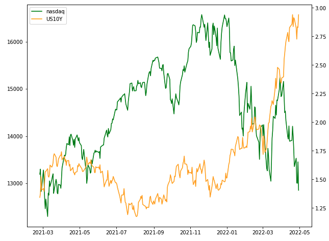

Pythonで相関係数を求める
Pythonで米国株の相関係数を求める方法をまとめる
相関係数とは
- 2組のデータの関係性を表す指標
- 1に近いほど「正の相関がある」
- -1に近いほど「負の相関がある」
pandasで相関係数を求める
import datetime
import pandas as pd
import matplotlib.pyplot as plt
# csvから読み込み
df = pd.read_csv("csv/NASDAQ_DLY_NDX_1D.csv")
df["time"] = pd.to_datetime(df["time"], unit="s")
1.ナスダックと米国債10年金利のcsvデータをtradingViewからエクスポート
2.pandasのデータフレームに読み込む
fig = plt.figure()
ax1 = fig.subplots()
ax2 = ax1.twinx()
# plotの設定
ax1.plot(df["time"], df["NDX_close"], color="green", label="nasdaq")
ax2.plot(df["time"], df["US10Y_close"], color="orange", label="US10Y")
# 凡例の設定
h1, l1 = ax1.get_legend_handles_labels()
h2, l2 = ax2.get_legend_handles_labels()
ax1.legend(h1 + h2, l1 + l2, loc="upper left")
plt.show()
matplotlibを用いてグラフを表示

米国10年債が上昇すると、ナスダックが下落しているように見える
相関係数を表示する
# 相関係数
corr = df.corr()
print(corr)
NDX_close US10Y_close
NDX_close 1.000000 -0.286372
US10Y_close -0.286372 1.000000
corr()はピアソンの相関係数を用いて相関係数を求める関数
相関係数はマイナスとなっているので負の相関があることがわかる